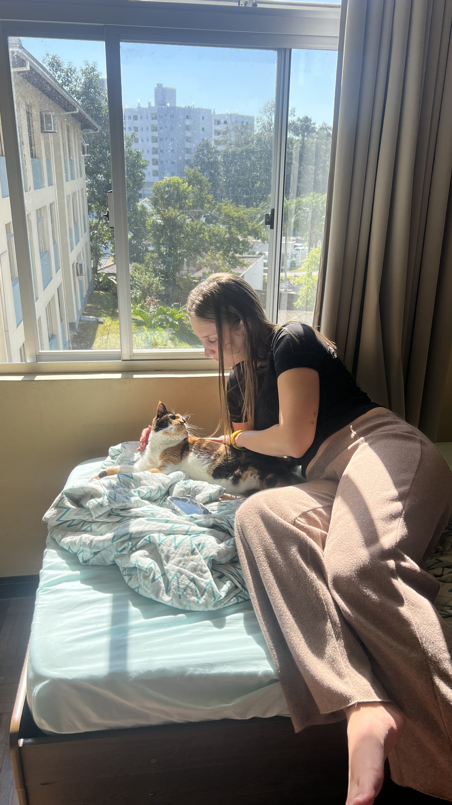

UM MOMENTO QUALQUER
...que acabou se tornando um dos meus favoritos.
role para baixo ↓
Talvez você nem lembre desse dia.
Você estava ali...
fazendo carinho na Míssi...
sem imaginar que eu salvaria essa foto.
Porque...
existe uma paz nela.
Uma paz difícil de explicar.
A luz entrando pela janela.
Você sorrindo sem perceber.
A Míssi tranquila.
Então eu percebi...
Meu lugar favorito...
nunca foi um lugar.
Sempre foi você.
Porque quando você está comigo...
qualquer lugar parece casa.
❤️
Se eu pudesse guardar um instante para sempre...
talvez fosse exatamente esse.